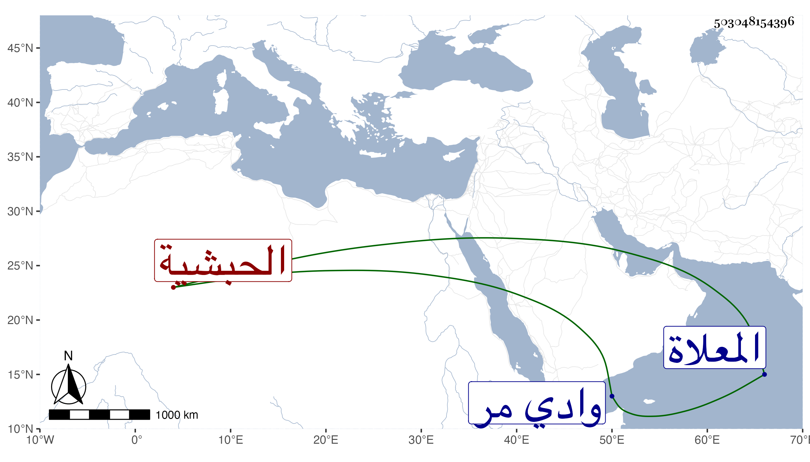

0902Sakhawi.DawLamic.ITO20230111-ara1.EIS1600.503048154396
Biography ID: 503048154396
800
نور الصباح الحبشية مولاة الجمالي أبي السعود بن ظهيرة وأم عدة من أولاده . ماتت في آخر يوم الاثنين خامس عشرى شعبان سنة ثلاث وتسعين وسيدها حينئذ بأرض خالد من وادي مر كان سافر اليها أول الشهر فصلى عليها بعد صلاة الصبح عند باب الكعبة ثم دفنت في تربتهم من المعلاة .
